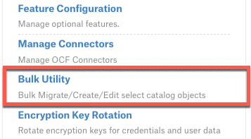
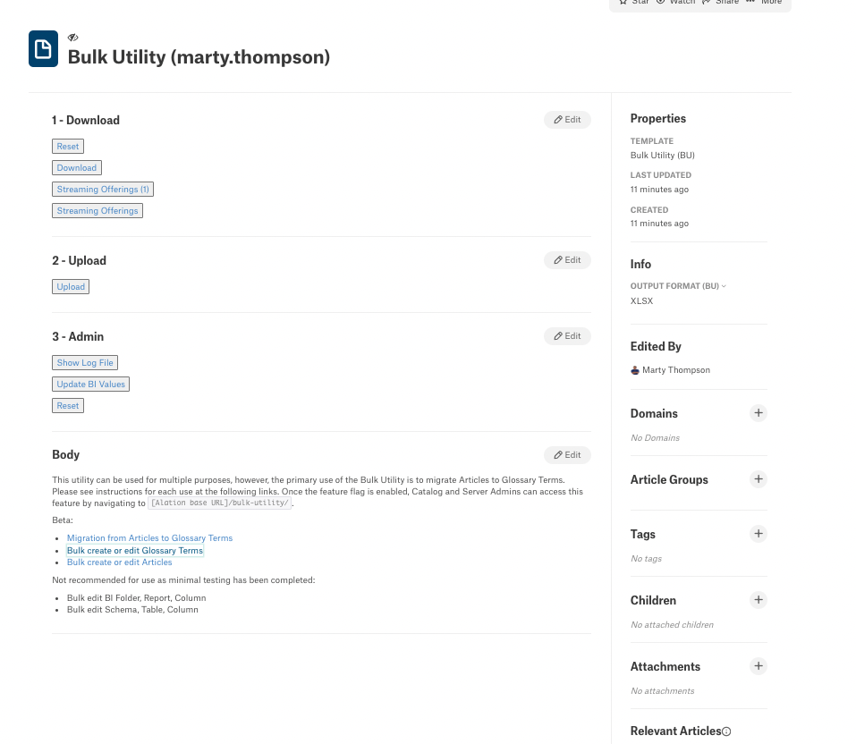
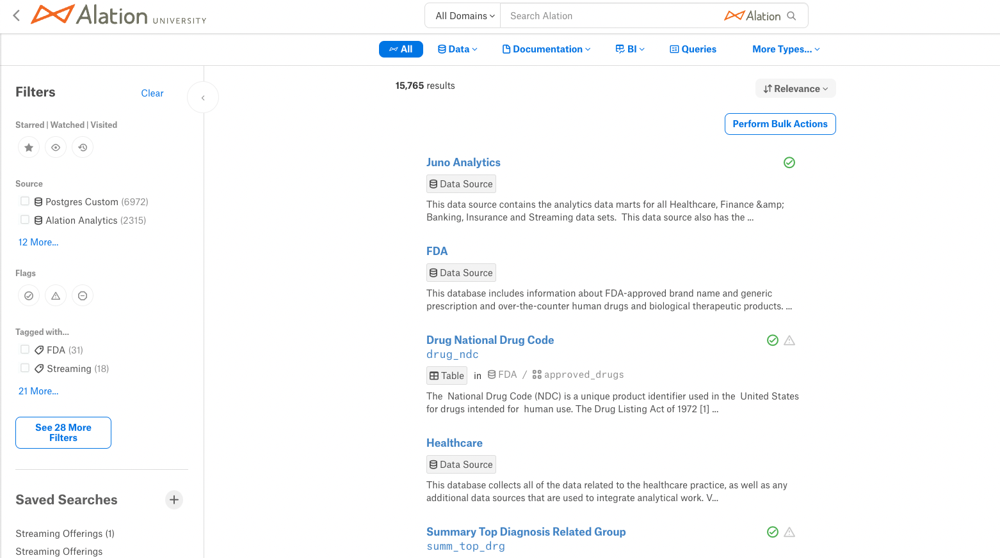
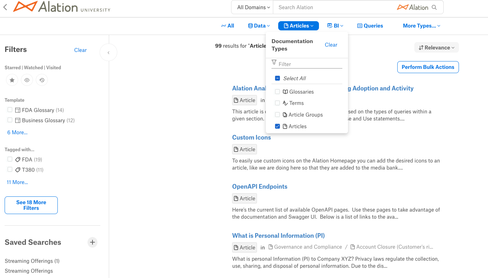
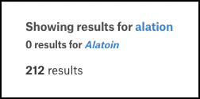

Migrate Articles to Glossary Terms¶
Alation Cloud Service Applies to Alation Cloud Service instances of Alation
Customer Managed Applies to customer-managed instances of Alation
This topic describes how to migrate existing Articles to Glossary Terms using the Bulk Utility. Before you begin, please consult the Known Issues and Tips and Tricks sections for additional guidance.
Enable the Bulk Utility¶
The Bulk Utility is available to Server and Catalog Admins once a Server Admin has enabled the Bulk Utility feature flag on the Feature Configuration page:
Access the Bulk Utility¶
Server Admins can access the Bulk Utility tool from the Admin Settings page:
Both Server Admins and Catalog Admins can also access the Bulk Utility tool by appending /bulk-utility/ to the end of the catalog URL. The utility appears as a generated Article within Alation:
The Article is named “Bulk Utility (user.name)”, where “user.name” is the user who accessed the page. The article is set to private; only other Catalog and Server Admins can see it.
Warning
Do not change the permission settings! This ensures that this feature is used only by you—other users will have their own copy of the article with permissions set for them.
What Is and Is Not Migrated by the Bulk Utility¶
When migrating existing articles to glossary terms, the following items are migrated:
Title
Description (including images and attachments in the Article body)
Tags
Domains
Custom fields
References in-copy (@ mentions and custom object set custom fields that mention articles)
The following items CAN be migrated, but must exist in order to be associated:
Glossary association
Term Type
Note
You MUST have a Term Type for Custom fields to be migrated.
The following items are NOT migrated:
Children (not part of the Term object)
Star (reset manually once Term is created)
Watch (reset manually once Term is created)
Original access settings (apply access settings in bulk by setting access settings at the Glossary level and associating a Glossary with an Article for migration)
Version History (refer to soft-deleted article if need to reference)
Conversations (refer to soft-deleted article if need to reference)
Attachments (not part of the Term object)
Pre-Migration Steps¶
Before beginning the migration, you must perform the following steps:
Decide which Articles you would like to migrate to Terms.
Make sure the Glossary Terms GA feature flag is enabled. See Manage Glossary and Term Configuration.
Create one or more Term Type templates as described in Build Term Type Templates.
Create the Glossaries you would like your new Terms to be organized into. Make sure each Glossary has a unique name, and make sure there are no semicolons (;) in Glossary names.
Warning
Make sure that you do not have multiple custom fields with the same name or custom fields with the same name as a built-in field. For example, you should not have a custom field named “description”.
Considerations for Term Types¶
When defining your Term Types, keep the following in mind:
If a Term Type is NOT included in the migration file, only the basic fields will be migrated. The basic fields are Title, Description, Properties, Glossary (if included), Domains, Tags, and Relevant Articles.
Every field you want migrated from Article to Term must be present in the Term Type in order for the fields to migrate.
Using the Customize Catalog feature in the Catalog Admin Settings, add the new object type “Term” to all “Object Set” fields that are currently set to Articles, but that you want to migrate to Terms and are contained in your new Term Types.
Unlike Articles, only one Term Type can apply to a single Term.
Term Type names do NOT need to match the name of the Article template.
Example¶
As an example of how Term Type definitions and usage can affect migration, consider the following scenario: Article “ARR” has the Article Template Name “Business”, which contains the three Custom Fields “Experts”, “PII”, and “Date Reviewed”. The following table shows how the migration behaves depending on the Term Type you associate with the Article in the csv for migration:
Term Type Name |
Field 1 in Type |
Field 2 in Type |
Field 3 in Type |
Fields included in new migrated Term, “ARR” . |
|---|---|---|---|---|
Business |
Experts |
PII |
Date Reviewed |
Experts, PII, Date Reviewd |
Purple Panda |
Experts |
PII |
Date Reviewed |
Experts, PII, Date Reviewd |
Blue Bird |
PII |
PII |
||
[no name added](csv) |
Experts |
PII |
Date Reviewed |
Fails entirely |
[no name added](xlxs) |
Experts |
PII |
Date Reviewed |
Only basic fields migrated |
Blu Bird (typo) |
PII |
Only basic fields migrated |
Migration Steps¶
The actual migration involves six major steps, as follows:
Create a Saved Search containing the articles you want to migrate.
Open the Bulk Utility and click the Saved Search you created.
Download and unzip the zip file created by the Bulk Utility.
Edit the “use for upload” spreadsheet from the zip file.
Upload the edited spreadsheet. The bulk utility then proceeds with the migration.
Review the migrated terms.
Create a Saved Search¶
To begin the migration, create a Saved Search as follows:
Navigate to the Alation search bar and press Enter to open the full-page search.
Filter search results for Articles, that is, select the Documentation dropdown and select Articles.
Choose additional filters to limit the export to Articles you’d like to migrate, then save your search by clicking the Save Search button (+) in the Saved Searches area of the left sidebar. Remember the name of your Saved Search as you will use it in the Bulk Utility.
Warning
If there are typos in your search query, Alation tries to correct for them and will often return results with the corrected spelling. However, the bulk utility does not make this same correction. You should therefore verify that the search results you are seeing are for the term or terms in your search query. Check the top of your search results—if you see a message similar to the following, you should correct your query:
Note
You can migrate only 10,000 articles at a time if using this search-based approach. We recommend starting with a smaller number (between 10 and 100) to better understand the process.
Open the Bulk Utility¶
If you have previously opened the Bulk Utility tool, you can search for “Bulk Utility” in the Alation search box and should see the Article titled “Bulk Utility” with your user name appended in the search results. The article should also appear in the Recently Visited section of the Alation homepage. If you have not previously opened the tool, you can do so from the Admin Settings page (if you are a Server Admin) or by appending /bulk-utility/ to the catalog base URL (if you are a Catalog Admin or Server Admin).
Under the Download heading, you should see the Saved Search you just created. If it is not visible, click Reset. This refreshes the buttons, removes any previous attachments, and resets options on the right side of the article.
Download and Unzip the Prepared File¶
Once you see the Saved Search you created:
Click on the button containing the name of the saved search. Wait a few seconds for the Bulk Utility to reload. It may tell you to refresh the page (using your browser’s Refresh button—do NOT press the Reset button).
When the download is complete, the article’s Attachments field will contain a link to the downloaded zip file.
Open the zip file. You will see two Excel files and potentially an images folder. One of the Excel files will have a name with “use this for upload” embedded in it. The other file and the images folder are for your reference.
Edit the Upload File¶
Open the Excel file with “use this for upload” in its name and make the following edits:
Add a column called “glossaries”. For each term, enter the name of the created glossary you want associated with that term. If you want to assign the same term to multiple glossaries, separate the glossary names with semicolons (;). A space between a glossary name and semicolon is optional.
Add a column called “action”. For each term you want to migrate, enter migrate_to_term in this column.
Delete the content of the “template” column and replace it with the name of the Term Type you created in the pre-migration steps.
Note
All embedded content within migrated Rich Text fields will migrate with no additional steps.
Upload the Edited File¶
Remove any current Attachments by clicking the x. Click the + in the Attachments field and select the completed file. Once the file is shown in Attachments, click the Upload button.
To check if the file is processing, right-click Show Log File in the 3-Admin section, then select Open Link in New Tab. You can then refresh this tab to see the output as it is actively changing.
In the Upload section of the Bulk Utility article page, you’ll see the number of Terms created and the time it took to create them.
Note
After each upload, download the associated “feedback file” under Attachments in the Bulk Utility article, with a name of the form <first-8-letters-of-username>-<4-random-characters>.xlsx.
Review the Migration Results¶
When the migration is complete, a new file will be shown under Attachments. Open this file and ensure you see a new article_id column in the final column with an ID for all rows containing migrated articles. Navigate to the new Terms within the catalog toi spot check that everything transferred as desired.
If you are happy with the results, you can soft-delete the migrated Articles by adjusting the file you originally downloaded for migration:
Add the action column as you did previously, however, this time use delete for all rows containing Articles you want to delete.
Spot check that your action was successful.
Known Issues¶
The following issues are either limitations in the Bulk Utility or issues reported in a particular Alation release corrected in later releases.
Object Sets with Duplicate Names within Articles (2022.4.0, 2022.4.1, 2022.4.2)¶
In Alation 2022.4 releases before 2022.4.3, there is a known issue with how the Bulk Utility handles any of the following included in Object Sets within Articles you plan to migrate:
Schemas that have the same name as other schemas within your Alation instance.
Tables that have the same table AND schema name as other tables within your Alation instance.
Columns that have the same column AND table AND schema name as other columns within your Alation instance.
Data Sources that were previously deleted then added again.
Multiple data sources with the same name.
Any Schema, Table, or Attributes references for which the schema name contains a period. (Both Amazon Redshift and Snowflake data sources are known to have this issue; other data sources may as well.)
If you have any of the above items, please do NOT use the Bulk Utility until you install Alation version 2022.4.3 or later.
Large Files Leading to Appearance of Utility Not Working (Limitation)¶
If the file is large, it may appear that the utility is not working. Do NOT click Upload more than once. If you believe the process is stuck or unresponsive, contact Alation Support before re-uploading to avoid any unwanted side effects.
If you accidentally migrate your articles twice resulting in duplicates, contact Alation Support for help before attempting to delete the resulting duplicate terms.
Download of Saved Search Appears to Hang (Issue in 2023.3.1)¶
Some users have reported that on download of a saved search, a message appears saying “we’re working on it” forever, even though the download succeeds, and the downloaded file gets added as an attachment. Additionally, on upload, users may be redirected to an internal server error page, even though the upload has succeeded. This issue, which also manifested occasionally as corrupted Article snapshots, has been resolved in Alation version 2023.3.2 and later.
Access to Bulk Utility Fails (Issue in 2023.3.0, 2023.3.1, 2023.3.2)¶
Some users reported that on attempting to open the Bulk Utility, they receive an error 500 page saying “I seem to be experiencing technical difficulties”. This issue has been fixed in release 2023.3.2.1 and later.
Tips and Tricks¶
Keep the spreadsheets used in the migration; they can serve as a mini-backup since they record the state of the articles before the migration. You can always restore or recreate them using Bulk Utility.
Both csv and xlsx files are suitable for creating upload files. However, do not use xlsx files created by the macOS Numbers application.
If you are uploading 100 or more rows, use the Asynchronous flag in the Features field under Info. (If this is not visible, click the button labeled Show Empty Fields.)
If you want to change your terms after migration, use the Bulk Utility to edit glossary terms.